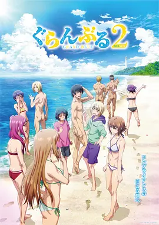

8.7
碧蓝之海 第二季
Grand Blue Season 2
2025
日本
评分 8.7
导演:
高松信司
演员:
内田雄马 / 木村良平 / 安元洋贵 / 小西克幸 / 安济知佳
类型:
喜剧
剧情简介
新学期的气息刚刚在伊豆蔓延，北原伊织的大学生活便再次被潜水部那群“永不穿衣服的家伙们”彻底搅乱。表面上，他仍住在潜水店 Grand Blue，与千纱和奈华在同一屋檐下过着看似宁静的日子；但只要走进店内，迎面而来的就是震天的笑声、突如其来的全裸狂奔，以及随时可能把他卷进去的混乱派对。伊织在混乱与日常之间不断切换，既无奈又忍不住投入其中。冲绳的潜水课程让他重新认识了水下的自由，而回到伊豆后，栞寄来的一封信又让他措手不及——妹妹强势来袭，让伊织焦头烂额，也让周围人产生种种误会。学园祭的忙碌、试胆大会的混乱、无人岛露营的意外，全都将伊织一次次推向不可预测的境地。千纱的爽朗、奈华的热情、梓的成熟与神秘感，都在这段夏日中不断涌现新的化学反应。与此同时，社团成员与伊织之间的友情也在无数荒诞的闹剧中变得更加牢固：夜里趴在屋顶吹风、潜水训练中默契的眼神交流、在冲突后彼此挺身而出的瞬间，让海边的青春显得格外鲜活。喧闹与宁静、笑声与尴尬，在这座海风不断的小镇交织成难忘的旋律，而伊织的大学生活，也在全裸狂徒与温柔伙伴的夹击之下再次热烈展开。